I am an Applied Engineering student at Millersville University with a concentration in Computer-Aided Drafting and Design and expect to complete my Bachelor's degree in December 2026.
My experience includes SolidWorks, Autodesk Inventor, AutoCAD, Tinkercad, technical drawings, blueprint interpretation, and manufacturing-focused design.
During my internship with Proteus Space, I standardized satellite CAD models and developed automation tools to improve engineering workflows.
View ResumeFeatured Models

AC Kukiri
Interactive 3D knife model.
View Model
Sample Model
Placeholder model used for testing multiple entries.
View Model